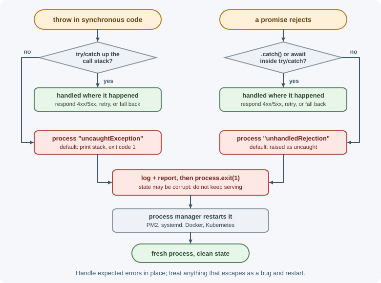
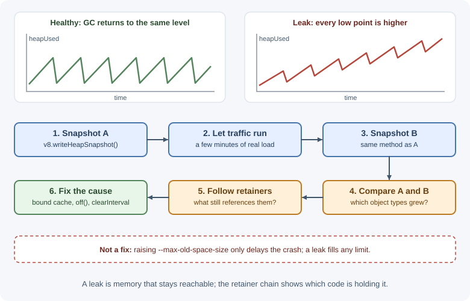

Errors, Debugging, and Performance¶
Every backend fails sometimes: a file is missing, a database refuses a
connection, a bug reads a property of undefined. This page covers how
errors work in Node.js, how to tell expected failures from bugs, what to do
with errors nobody caught, and how to debug, profile, and find memory leaks
in a running Node.js process.
Why it matters¶
How a service handles errors decides whether a failure becomes a clear
503 response and a useful log entry, or a silent hang, a crashed process,
or corrupted data. When a server is slow or its memory keeps growing,
profiling tools turn guesswork into evidence. These skills separate code that
works on a laptop from code that survives production. HTTP-level error
responses are covered in error handling in Express
and the general concept in error handling.
Real-world usage¶
- Netflix tracked down steadily rising latency on its Node.js website by recording CPU profiles and drawing them as flame graphs. The graphs showed most of the time inside Express's routing code, which led to the bug: a handler was registered over and over (Netflix Technology Blog: Node.js in Flames).
- Sentry's Node.js SDK registers a handler, on by default, that captures uncaught exceptions which would make the process exit. It reports them and, by design, does not stop the process from exiting. This is the "log, report, exit" pattern on this page (Sentry docs: OnUncaughtException).
- PM2 restarts an application automatically when it crashes or exits.
It can back off between restarts with exponentially increasing delays,
for example while a database is down, and can restart a process that
passes a memory threshold such as
--max-memory-restart 300M(PM2 docs: Restart strategies).
Popular tools and providers: Chrome DevTools and VS Code via --inspect;
--cpu-prof and heap snapshots; Clinic.js; Sentry, Datadog, and New Relic
for error tracking and APM; PM2, systemd, and Kubernetes for restarts.
How it works¶
The Error object¶
const error = new Error("Order not found");
error.name; // "Error"
error.message; // "Order not found"
error.stack; // "Error: Order not found\n at findOrder (orders.js:12:11) ..."
Always throw Error objects (or subclasses), never strings: only Error
objects carry a stack trace showing where the problem started.
Built-in error types¶
| Type | Thrown when | Example |
|---|---|---|
TypeError |
A value is not the expected type | undefined.toUpperCase() |
ReferenceError |
A variable does not exist | console.log(usr) (typo) |
RangeError |
A number is outside an allowed range | new Array(-1) |
SyntaxError |
Code or data cannot be parsed | JSON.parse("{bad") |
AggregateError |
Several errors are grouped | Promise.any when all reject |
System errors and error codes¶
Errors from the operating system and Node.js APIs carry a string code.
Check error.code, not the message, because messages can change.
| Code | Meaning | Typical cause |
|---|---|---|
ENOENT |
No such file or directory | Wrong path, file deleted |
EACCES / EPERM |
Permission denied | File permissions, privileged port |
EADDRINUSE |
Address already in use | Another process uses the port |
ECONNREFUSED |
Connection refused | Target service is down or the port is wrong |
ECONNRESET |
Connection reset by peer | The other side closed the connection abruptly |
ETIMEDOUT |
Operation timed out | Network problem, unresponsive host |
ENOTFOUND |
DNS lookup failed | Wrong hostname |
EMFILE |
Too many open files | File handles or sockets not closed |
Node.js's own errors use codes beginning with ERR_, such as
ERR_HTTP_HEADERS_SENT or ERR_MODULE_NOT_FOUND.
Adding context with cause¶
When you catch an error and throw a new one with more context, attach the
original with the cause option so nothing is lost:
try {
await db.query("SELECT ...");
} catch (error) {
throw new Error("Failed to load customer report", { cause: error });
}
Logging the new error shows both messages and both stack traces.
Custom error classes¶
Subclasses let code recognize error categories and carry extra data such as an HTTP status:
export class AppError extends Error {
constructor(message, { statusCode = 500, code, cause } = {}) {
super(message, { cause });
this.name = this.constructor.name;
this.statusCode = statusCode;
this.code = code;
}
}
export class NotFoundError extends AppError {
constructor(resource) {
super(`${resource} not found`, { statusCode: 404, code: "NOT_FOUND" });
}
}
throw new NotFoundError("Order"); // error instanceof AppError === true
Operational errors versus programmer errors¶
| Operational errors | Programmer errors (bugs) |
|---|---|
| Expected failures in a correct program | Mistakes in the code |
| Invalid user input, missing file, database down, upstream timeout, duplicate key | Reading a property of undefined, calling a function with wrong arguments, forgetting await |
| Handle them: retry, return a 4xx/5xx response, use a fallback | Fix the code. At runtime, log them and usually restart the process |
A process that hit a bug may be in an unknown state (half-updated variables, leaked connections). Restarting is often safer than continuing.
How errors propagate¶
- Synchronous code: a
throwtravels up the call stack until atry/catchhandles it. - Promises and
asyncfunctions: a throw becomes a rejection. It is handled by.catch()or byawaitinsidetry/catch. - Callbacks: errors arrive as the first callback argument; a
throwinside a callback is not caught by atryaround the original call, because that call returned long ago. - Event emitters and streams: errors arrive as
errorevents.
try {
setTimeout(() => {
throw new Error("boom"); // NOT caught below: runs later, on a new stack
}, 0);
} catch (error) {
console.log("never runs");
}
Uncaught exceptions and unhandled rejections¶
If an error escapes every handler:
- An uncaught exception makes Node.js print the stack trace and exit with code 1.
- An unhandled rejection (a rejected promise nobody handled) is, by default, treated the same way: it is raised as an uncaught exception and the process exits.
You can listen for both on process, but only to log and exit:
process.on("uncaughtException", (error) => {
console.error("Uncaught exception:", error);
process.exit(1); // state may be corrupt: let the process manager restart us
});
process.on("unhandledRejection", (reason) => {
console.error("Unhandled rejection:", reason);
process.exit(1);
});
Do not use these handlers to keep running as if nothing happened. Pair them with a process manager or orchestrator (PM2, systemd, Docker, Kubernetes) that restarts the process automatically, and send the error to your monitoring system.

Debugging with the inspector¶
Node.js includes a debugger based on the Chrome DevTools protocol.
node --inspect server.js # start normally, debugger listens on 127.0.0.1:9229
node --inspect-brk server.js # pause on the first line, wait for the debugger
node --inspect --watch server.js
Then attach:
- Chrome: open
chrome://inspectand click "inspect" under your target. - VS Code: use the JavaScript Debug Terminal, or a launch configuration
with
"type": "node". Breakpoints, step-through, watch expressions, and the call stack all work.
You can also add a debugger; statement in code; execution pauses there
when a debugger is attached.
Warning
Never expose the inspector port publicly. Anyone who can connect to it
can run arbitrary code in your process. Keep it bound to 127.0.0.1.
Console and util.inspect¶
| Method | Use |
|---|---|
console.log / console.error |
Output to stdout / stderr. |
console.table(rows) |
Print arrays of objects as a table. |
console.time(label) / console.timeEnd(label) |
Measure elapsed time. |
console.trace(message) |
Print a stack trace without throwing. |
console.dir(obj, { depth: null }) |
Print nested objects fully. |
util.inspect(obj, { depth: null, colors: true }) |
Format any value as a readable string. |
For production logging, use a structured logger (see logging and monitoring).
CPU profiling¶
When requests are slow and the event loop delay is high, find out which functions use the CPU:
node --cpu-prof server.js # writes a .cpuprofile file when the process exits
Open the file in Chrome DevTools (Performance panel) or VS Code to see a flame chart. You can also record a profile live from the inspector's Performance tab. Community tools such as Clinic.js build on these capabilities.
Memory: heap, garbage collection, and leaks¶
V8 stores objects on the heap and frees unreachable objects with the
garbage collector (GC). A memory leak happens when objects stay
reachable even though the program no longer needs them, so the GC
cannot free them. Memory then grows until the process slows down from
constant GC or crashes with
FATAL ERROR: ... JavaScript heap out of memory.
Common causes in servers:
- Global or module-level collections that only grow, such as a
Mapused as a cache with no size limit or expiry. - Event listeners added per request to long-lived emitters and never removed.
- Timers and intervals that are never cleared and keep closures alive.
- Closures capturing large objects longer than needed.
- Unclosed resources: sockets, streams, database cursors.
Finding leaks:
- Watch
process.memoryUsage().heapUsed(or your monitoring dashboards) over time. A sawtooth that keeps rising is suspicious. - Take heap snapshots a few minutes apart—from the inspector's Memory
tab, with
v8.writeHeapSnapshot(), or by starting Node.js with--heapsnapshot-signal=SIGUSR2and sending that signal. - Compare the snapshots in Chrome DevTools to see which object types keep growing, and follow their retainers to the code holding them.

The --max-old-space-size=<megabytes> flag changes the heap limit. Raise it
when a workload legitimately needs more memory, but never as a fix for a
leak; a leak eventually fills any limit.
Measuring performance in code¶
import { performance } from "node:perf_hooks";
performance.mark("query-start");
await runQuery();
performance.mark("query-end");
performance.measure("query", "query-start", "query-end");
const [entry] = performance.getEntriesByName("query");
console.log(`query took ${entry.duration.toFixed(1)} ms`);
performance.now() gives a high-resolution timestamp for quick
measurements. For event loop health, see
monitorEventLoopDelay.
Diagnostic reports¶
A diagnostic report is a JSON summary of a process's state: JavaScript and native stack traces, heap statistics, resource usage, environment, and loaded libraries. Generate one on a crash or on demand:
node --report-on-fatalerror --report-uncaught-exception server.js
process.report.writeReport(); // writes a report file now
Reports are useful when a process crashes in production and you cannot
attach a debugger. On Node.js 22, process.report.writeReport() printed
Writing Node.js report to file: report.<date>.<time>.<pid>.0.001.json and
saved the file in the working directory.
When to use and when not to use¶
- Use the inspector (
--inspect) locally and in staging to step through code. In production, use it only through a secure tunnel, briefly. - Use CPU profiles when latency or CPU is high and event loop delay rises; they show which functions burn time.
- Use heap snapshots when memory grows steadily over hours; take two or three apart and compare them.
- Use diagnostic reports for crashes you cannot reproduce, and for native or resource problems.
- Use structured logs and error tracking for everything else; they are always on, unlike the tools above.
- Do not profile blindly in production at full traffic. Writing a heap snapshot is synchronous and blocks the event loop, and it needs about twice the heap's size in memory, which can get the process OOM-killed. Profiling also slows the process. Take them from one instance that has been removed from the load balancer.
| Problem | First tool | Then |
|---|---|---|
| A bug you can reproduce | Inspector + breakpoints | A test that reproduces it |
| Slow requests, high CPU | --cpu-prof / flame graph |
Optimise the hottest frames |
| Memory grows until crash | Heap snapshots compared | Fix the retainer, bound caches |
| Crash with no clue | Diagnostic report + error tracker | Add logging around the failing path |
| Errors in production | Error tracker (with stack traces) | Group, triage, fix |
Practical examples¶
Handling a specific system error¶
import { createServer } from "node:http";
const port = Number(process.env.PORT ?? 3000);
const server = createServer((request, response) => response.end("ok\n"));
server.on("error", (error) => {
if (error.code === "EADDRINUSE") {
console.error(`Port ${port} is already in use. Stop the other process or set PORT.`);
process.exit(1);
}
throw error; // anything else is unexpected
});
server.listen(port);
A bounded cache that cannot leak¶
const MAX_ENTRIES = 1000;
const cache = new Map();
export function remember(key, value) {
if (cache.size >= MAX_ENTRIES) {
const oldestKey = cache.keys().next().value; // Maps keep insertion order
cache.delete(oldestKey);
}
cache.set(key, value);
}
For anything beyond simple cases, use a library with expiry (an LRU cache) or an external cache such as Redis; see caching.
Logging memory usage periodically¶
setInterval(() => {
const { rss, heapUsed, heapTotal } = process.memoryUsage();
const mb = (bytes) => (bytes / 1024 / 1024).toFixed(1);
console.log(`rss=${mb(rss)}MB heap=${mb(heapUsed)}/${mb(heapTotal)}MB`);
}, 30_000).unref();
Best practices¶
- Throw
Errorobjects, never strings; usecauseto keep context. - Check
error.codefor system errors instead of matching messages. - Separate operational errors (handle and respond) from bugs (log, fix, and restart).
- Log and exit on
uncaughtExceptionandunhandledRejection; let a process manager restart the service. - Never leave
--inspectopen to the network. - Profile before optimizing; measure, change one thing, measure again.
- Bound every in-memory cache and remove listeners and timers you add.
- Monitor memory, CPU, and event loop delay in production.
In production¶
- Restart loops after a dependency outage.
- Symptom: when the database goes down, the app restarts dozens of times a minute and floods the database with reconnects when it returns.
- Detect: restart counts spike with the dependency's outage, and the
crash logs show
ECONNREFUSEDat startup. - Cause: the app exits on a connection error, and the process manager restarts it immediately.
- Fix: retry the connection with backoff at startup, and use the process
manager's backoff option (PM2
--exp-backoff-restart-delay, or Kubernetes' built-inCrashLoopBackOff). - Silent failures.
- Symptom: customers report missing data, but there are no errors in the logs.
- Detect: search the code for empty
catch {}blocks and.catch(() => {}); compare business counts with expectations. - Cause: errors swallowed without logging.
- Fix: log with context and rethrow, or handle deliberately, never both nothing and continue.
- Out-of-memory crashes every few days.
- Symptom: the process dies with a line ending in
JavaScript heap out of memory, or the container isOOMKilled, at regular intervals. - Detect: heap usage after each garbage collection keeps rising in metrics; comparing snapshots shows one object type growing.
- Cause: an unbounded cache, listeners added per request, or timers never cleared.
- Fix: bound or expire caches, remove listeners, and add a heap-usage alert well before the limit.
- "Error: [object Object]" in logs.
- Symptom: logs show useless error messages with no stack trace.
- Detect: the logged values are strings or plain objects, not
Errorinstances. - Cause: code that throws strings or objects, or logging
String(error)instead of the error itself. - Fix: always throw
Error(or a subclass) withcause, and log the whole error so the stack is kept. - An exposed debugger.
- Symptom: a security scan finds port 9229 open.
- Detect: the process was started with
--inspect=0.0.0.0in a production command. - Cause: a debugging flag left in a deployment manifest.
- Fix: remove it. Anyone who can connect can run code in your process.
Important terminology¶
- Stack trace: The list of function calls active when an error was created.
- Error code: A stable string such as
ENOENTidentifying an error type. - Operational error: An expected failure in correct code.
- Programmer error: A bug in the code.
- Uncaught exception: An error that escaped every handler.
- Unhandled rejection: A rejected promise with no rejection handler.
- Inspector: Node.js's built-in debugging interface.
- CPU profile: A recording of where processing time is spent.
- Heap snapshot: A dump of all objects in memory at one moment.
- Memory leak: Memory that stays allocated because unneeded objects remain reachable.
- Garbage collector: The engine component that frees unreachable objects.
Common mistakes and misconceptions¶
- Empty
catchblocks that swallow errors and hide failures. - Keeping the process alive after
uncaughtException. - "
try/catchcatches errors in callbacks." Only errors thrown synchronously in thetryblock, or awaited rejections. - Comparing error messages instead of codes or classes.
- Raising
--max-old-space-sizeto "fix" a leak. - Leaving
console.logdebugging statements in hot paths, which slows servers and can leak sensitive data. - Optimizing without profiling, often in the wrong place.
Revision questions¶
- Why should you throw
Errorobjects instead of strings? - What is the difference between an operational error and a programmer error, and how should each be handled?
- What should a process do in an
uncaughtExceptionhandler, and why? - How do you attach Chrome DevTools to a Node.js process?
- Name four common causes of memory leaks in Node.js servers.
- How would you find which code is responsible for growing memory?